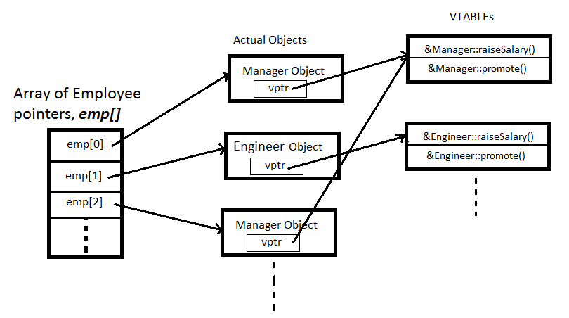

How Late Binding Works
Virtual member functions are implemented by adding a new pointer to every object that contains at least one virtual function. This pointer is called a vptr and it points to a table of functions, called a vtable or Virtual Method Table. The vtable contains the actual addresses of the functions to be called for that class.

Using this illustration, let's see how late binding, or dynamic dispatch works:
- You call emp[0]->raiseSalary()
- Your call is routed though the vptr in emp[0], which is actually a Manger, and your call eventually finds the address of the Manager::raiseSalary() function inside the Manager vtable.
- You call emp[1]->promote()
- Your call is routed through the vptr in emp[1], which is actually an Engineer. This vptr points to the Engineer vtable where it finds the Engineer::promote() function.
 This course content is offered under a
CC
Attribution Non-Commercial license. Content in this course
can be considered under this license unless otherwise noted.
This course content is offered under a
CC
Attribution Non-Commercial license. Content in this course
can be considered under this license unless otherwise noted.